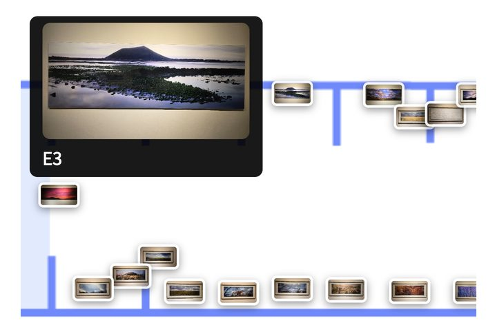
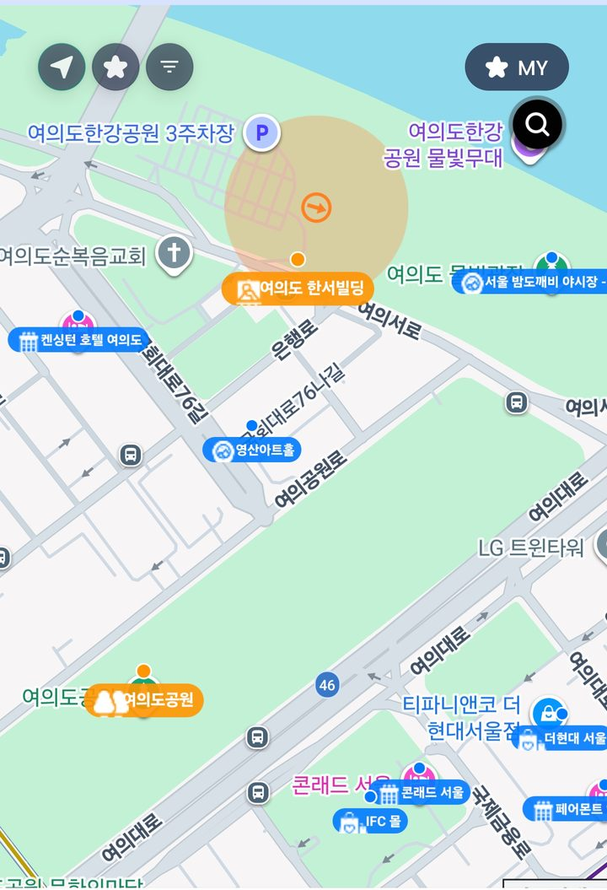

N.O.W 앱 · UI 개선 목업
Before / After — 기획팀 수정제안 반영
왼쪽이 현재 앱, 오른쪽이 개선안입니다. 화면으로 설명되는 것은 정지 화면으로, 눌러야 이해되는 것(전체 카테고리·작품 핀·글씨 크기)만 실제로 동작합니다.
1
카테고리 내비게이션
문제: 카테고리가 가로 스와이프 뒤에 숨어 11개 중 4개만 보임. 커스텀 카테고리라 안 보이면 존재를 모름. 개선: "⊞ 전체" 버튼을 항상 같은 자리에 두고, 누르면 전 카테고리를 풀스크린 리스트로.
BEFORE
7개 카테고리가
스와이프 뒤에 숨음
SKT 3:495G ▮▮ 55%
🏠› 산이정원
🌐🔇
안내도테마정원
주요시설식물도감
›
산이정원에 오신 걸 환영합니다. 전라남도 바닷바람과 숲의 결이 함께 어우러지는 이곳은, 걸음을 옮길수록 풍경이 차분히 달라지는 정원이에요. 천천히 둘러보시다가 눈에 딱 들어오는 곳이 있으면 바로 말씀해 주세요.
오후 03:49
🎙메시지를 입력하세요...➤
현재 — 칩 4개 노출, 나머지는 › 스와이프해야 존재를 알 수 있음
→
AFTER
SKT 3:495G ▮▮ 55%
🏠› 산이정원
🌐🔇
📍 안내도테마정원
⊞ 전체
산이정원에 오신 걸 환영합니다. 궁금한 곳이 있으면 말씀해 주세요.
오후 03:49
🎙메시지를 입력하세요...➤
👆 "⊞ 전체"를 눌러보세요. 풀스크린 리스트(아이콘+이름+설명)가 열리고, 항목을 고르면 챗봇이 바로 안내
안내도가 여러 개인 관광지는 안내도 존만 좌우 스크롤되고 "⊞ 전체"는 고정됩니다:
2
전시 안내도 — 김영갑갤러리 두모악
문제: 도면 위에 작품 썸네일 수십 장이 실좌표 그대로 붙어, 축소하면 뭉개지고 확대해야 하나씩 보임. 관 구분·관람 순서·작품 정보 진입이 없음. 개선(기획팀 4안 통합): 관 선택 → 번호 핀 도면 → 핀 탭 → 작품 카드 + 오디오 가이드.
BEFORE
SKT 3:475G ▮▮ 56%
🏠› 김영갑갤러리 두모악
🌐🔇
안내도시설안내관람안내
‹›
1전시실 바람
앨범
확대해야 겨우 한 작품씩 보임

현재 화면 (실제 스크린샷) — 작품 썸네일이 도면 좌표에 그대로 겹쳐 있음
현재 — 관 구분 없음, 작품 정보·오디오 진입 불명확
→
AFTER
SKT 3:475G ▮▮ 56%
🏠› 김영갑갤러리 두모악
두모악관
하날오름관
유품전시실
영상관
두모악관 · 1전시실 "바람"
복도
1
2
3
4
5
6
7
8
관람 순서 1 / 8벽면 A
용눈이오름
2000 · C-Print · 150×50cm
작품 사진
▶ 오디오 가이드 듣기
‹ 이전 작품다음 작품 ›
👆 관 탭·번호 핀·오디오 버튼이 동작합니다. 썸네일 대신 관람 순서 번호 핀 — 축소해도 안 뭉개지고, 핀을 누르면 작품 카드가 열림
3
지도 홈 — 검색
문제: 검색이 지도 위 작은 돋보기 아이콘 하나에 숨어 있어 눈에 안 띔. 개선: 검색바를 명시적으로 노출 — 기획팀 제안 두 방식을 나란히 비교. (정지 화면으로 충분해 인터랙션 없음)
BEFORE
SKT 3:475G ▮▮ 56%
N.O.W
☀️ 영등포구 28°C

➤
★
≡
★ MY
🔍
검색이 아이콘 하나에 숨음
📍플레이스🌐글로벌
📷카메라🗂리멤버
⋯더보기
현재 — 우상단 돋보기가 유일한 검색 진입점
→
AFTER ①
SKT 3:475G ▮▮ 56%
N.O.W
☀️ 영등포구 28°C
🔍 가이드 받고 싶은 장소를 검색하세요
➤
★
≡
검색바 상시 노출
📍플레이스🌐글로벌
📷카메라🗂리멤버
⋯더보기
기획팀 #1 — 지도 위 검색바 (발견성 최고, 지도 10% 가림)
AFTER ②
SKT 3:475G ▮▮ 56%
🔍 가이드 받고 싶은 장소를 검색하세요
☀️ 영등포구 28°C
📍플레이스🌐글로벌
📷카메라🗂리멤버
⋯더보기
기획팀 #2 — 탭바(로고 라인) 검색 (지도 안 가림, 노출은 #1보다 약함)
4
더보기 — 글씨 크기 설정
요청: 고령 방문객을 위한 글씨 크기 조절. 개선: 더보기 목록에 "글씨 크기" 행 추가 — 3단계 선택, 채팅·안내 텍스트 전체에 적용.
BEFORE
SKT 3:475G ▮▮ 56%
N.O.W
📢공지사항›
🗓이벤트›
🌐나의 언어›
🅿️포인트›
⚙️음성설정›
❓도움말›
Version 1.0.194
📍플레이스🌐글로벌
📷카메라🗂리멤버
⋯더보기
현재 — 글씨 크기 관련 설정 없음
→
AFTER
SKT 3:475G ▮▮ 56%
N.O.W
📢공지사항›
🌐나의 언어›
🔠글씨 크기›
산이정원에 오신 걸 환영합니다. 채팅과 안내 글씨가 이 크기로 보여요.
⚙️음성설정›
❓도움말›
📍플레이스🌐글로벌
📷카메라🗂리멤버
⋯더보기
👆 작게/보통/크게를 눌러보세요. 미리보기 문장이 실제 적용 크기로 변함